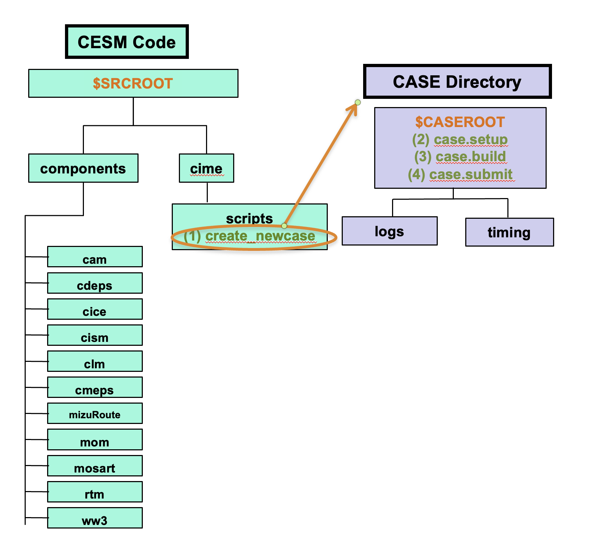
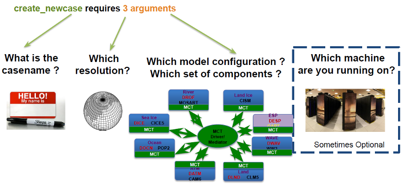
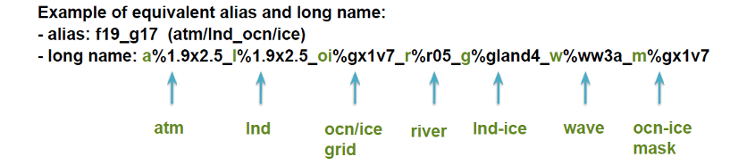
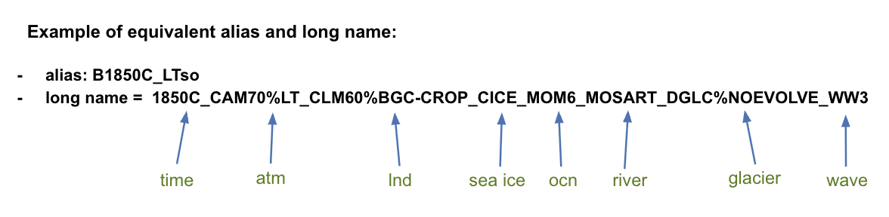

Create New Case#
The tool that generates a new case is create_newcase. This tool is located in the $SRCROOT directory under the cime/scripts directory.
After running create_newcase, a $CASEROOT directory is created. The directory $CASEROOT contains the scripts needed for the following steps (case.setup, case.build and case.submit)

Figure: Detailed view of the location of create_newcase
For the current tutorial on Derecho, the paths are:
$SRCROOT=/glade/u/home/$USER/code/my_cesm_code$CASEROOT=/glade/u/home/$USER/cases/$CASE
Command Syntax#
Go to the cime/scripts directory in the CESM code
cd /glade/u/home/$USER/code/my_cesm_code/cime/scripts/
Example of basic ./create_newcase syntax:
./create_newcase --case /glade/u/home/$USER/cases/CASE --res RES --compset COMPSET
NOTE: Do not enter the example above at the command line. You will create your first case in the Exercise at the end of this section.
Click here for example output
Compset longname is 1850C_CAM70%LT_CLM60%BGC-CROP_CICE_MOM6_MOSART_DGLC%NOEVOLVE_WW3
Compset specification file is /glade/u/home/$USER/code/myTutorialCode/cime_config/config_compsets.xml
Automatically adding SESP to compset
Compset forcing is
ATM component is CAM cam7 physics:CAM low top model
LND component is clm6.0:BGC (vert. resol. CN and methane) with prognostic crop:
ICE component is Sea ICE (cice) model version 6
OCN component is MOM6 OCEAN
ROF component is MOSART: MOdel for Scale Adaptive River Transport
GLC component is Data glc model (DGLC) no evolve mode
WAV component is Wave Watch
ESP component is Stub external system processing (ESP) component
Pes specification file is /glade/u/home/$USER/code/myTutorialCode/cime_config/config_pes.xml
Compset specific settings: name is RUN_STARTDATE and value is 0001-01-01
Compset specific settings: name is LND_SETS_DUST_EMIS_DRV_FLDS and value is FALSE
Machine is derecho
Pes setting: grid match is a%ne16np4.pg3_l%ne16np4.pg3_oi%tx2_0v1
Pes setting: machine match is derecho
Pes setting: compset_match is CAM.*%LT.*MOM6(?!.*%MARBL-BIO)
Pes setting: pesize match is M
Pes setting: grid is a%ne16np4.pg3_l%ne16np4.pg3_oi%tx2_0v1_r%r05_g%gris4_w%wgx3v7_z%null_m%tx2_0v1
Pes setting: compset is 1850C_CAM70%LT_CLM60%BGC-CROP_CICE_MOM6_MOSART_DGLC%NOEVOLVE_WW3_SESP
Pes setting: tasks is {'NTASKS_ATM': 896, 'NTASKS_LND': 128, 'NTASKS_ROF': 128, 'NTASKS_ICE': 256, 'NTASKS_OCN': 640, 'NTASKS_GLC': 64, 'NTASKS_WAV': 64, 'NTASKS_CPL': 896}
Pes setting: threads is {'NTHRDS_ATM': 1, 'NTHRDS_LND': 1, 'NTHRDS_ROF': 1, 'NTHRDS_ICE': 1, 'NTHRDS_OCN': 1, 'NTHRDS_GLC': 1, 'NTHRDS_WAV': 1, 'NTHRDS_CPL': 1}
Pes setting: rootpe is {'ROOTPE_ATM': 0, 'ROOTPE_LND': 0, 'ROOTPE_ROF': 128, 'ROOTPE_ICE': 256, 'ROOTPE_OCN': 896, 'ROOTPE_GLC': 576, 'ROOTPE_WAV': 512, 'ROOTPE_CPL': 0}
Pes setting: pstrid is {}
Pes setting: excl_stride is {}
Pes other settings: {}
Pes other settings append: {}
setting additional fields from config_pes: {}, append {}
Compset is: 1850C_CAM70%LT_CLM60%BGC-CROP_CICE_MOM6_MOSART_DGLC%NOEVOLVE_WW3_SESP
Grid is: a%ne16np4.pg3_l%ne16np4.pg3_oi%tx2_0v1_r%r05_g%gris4_w%wgx3v7_z%null_m%tx2_0v1
Components in compset are: ['cam', 'clm', 'cice', 'mom', 'mosart', 'dglc', 'ww3', 'sesp']
Using project from .cesm_proj: P93300606
No charge_account info available, using value from PROJECT
cesm model version found: cesm3_0_alpha09b-16-gfafcb75
Batch_system_type is pbs
job is case.run USER_REQUESTED_WALLTIME None USER_REQUESTED_QUEUE None WALLTIME_FORMAT %H:%M:%S
job is case.st_archive USER_REQUESTED_WALLTIME None USER_REQUESTED_QUEUE None WALLTIME_FORMAT %H:%M:%S
job is case.cupid USER_REQUESTED_WALLTIME None USER_REQUESTED_QUEUE None WALLTIME_FORMAT %H:%M:%S
Creating Case directory /glade/work/katec/sandboxes/cesm_cases/my.B1850C_LTso.ne16pg3_t201.test7
Notes:
For all user scripts you can run the script name followed by the
--hor--helpargument to see help documentation for that script and a list of all command line arguments for that script.Double dashes
--are required with command line arguments
Command Arguments#

Casename#
--case is the argument that specifies the name and location of the case being created. In the example above, the casename is CASE and the location of the case is /glade/u/home/$USER/cases/. Note that if a path preceding the casename is not specified, then the case is created as a subdirectory of the $CIMEROOT/scripts directory.
The path
/glade/u/home/$USER/cases/CASEis your workspaceCASEROOT, as described in the workspaces section.
In this tutorial we will use fairly simple names for the cases you create, build, and run. However, most CESM experiments have much longer casenames that provide information about the experiment at a glance. Knowing the CESM case naming conventions will help you navigate CESM community experiments. Information about the CESM naming is available at:
Resolution#
--res is the argument that specifies the model resolution or grid. In the example above, the resolution is RES. Each model resolution can be specified with the --res argument by its alias or its full long name. However, the long name conventions are generally quite lengthy, so it is useful if you become familiar with using the alias version. Because the atmosphere and land share a grid, and the ocean and sea ice share a grid, only two grids are specified by the alias using the following format: atm/lnd_ocn/ice.

CESM2 Supported Grid Definitions#
Link for CESM Supported Grids:
http://www.cesm.ucar.edu/models/cesm2/config/grids.html
CIMEROOT/scripts/query_config --grids --long
Click here for example output
=========================================
GRID naming convention
=========================================
The notation for the grid longname is
a%name_l%name_oi%name_r%name_m%mask_g%name_w%name
where
a% => atm, l% => lnd, oi% => ocn/ice, r% => river, m% => mask, g% => glc, w% => wav
Supported out of the box grid configurations are given via alias specification in
the file "config_grids.xml". Each grid alias can also be associated with the
following optional attributes
compset (Regular expression for compset matches that are required for this grid)
not_compset (Regular expression for compset matches that are not permitted this grid)
Using the alias and the optional "compset" and "not_compset" attributes a grid longname is created
Note that the mask is for information only - and is not an attribute of the grid
By default, if the mask is not specified below, it will be set to the ocnice grid
And if there is no ocnice grid (such as for single column, the mask is null since it does not mean anything)
-------------------------------------------------------------
default component grids:
component compset value
-------------------------------------------------------------
atm SATM null
lnd SLND null
ocnice SOCN null
rof SROF null
rof DWAV rx1
rof RTM r05
rof MOSART r05
rof MIZUROUTE r05mz
rof DROF rx1
rof DROF%CPLHIST r05
rof XROF r05
glc SGLC null
glc CISM2 gris4
glc DGLC gris4
glc XGLC gris4
wav SWAV null
wav DWAV wgx3v7
wav WW3 wgx3v7
wav XWAV wgx3v7
iac SIAC null
-------------------------------------------------------------
alias: g16_g16 (only for compsets that are DATM.+DROF )
longname: a%gx1v6_l%gx1v6_oi%gx1v6_r%null_g%null_w%null_z%null_m%gx1v6
non-default grids are: atm:gx1v6 lnd:gx1v6 ocnice:gx1v6
gx1v6 is displaced Greenland pole v6 1-deg grid: with domain file(s):
alias: g17_g17 (only for compsets that are DATM.+DROF only for compsets that are not _MOM )
longname: a%gx1v7_l%gx1v7_oi%gx1v7_r%null_g%null_w%null_z%null_m%gx1v7
non-default grids are: atm:gx1v7 lnd:gx1v7 ocnice:gx1v7
gx1v7 is displaced Greenland pole 1-deg grid with Caspian as a land feature: with domain file(s):
...
Compset#
--compset is the argument that specifies the component set. In the example above, the compset is COMPSET. The compset specifies the component models and if they are active or not, forcing scenarios, and physics options for the models. As above, the --compset can be specified by its alias or its full long name. However, the long name conventions are generally quite lengthy, so it is useful if you become familiar with using the alias version.

Note:
Compsets are defined by different model components (active or data) and cime.
Some compsets are scientifically supported and/or tested, while some are only defined. The CESM project will not provide comprehensive support for compsets that are only defined.
Compsets determine which grid is required.
CESM2 Supported Compsets#
Link for CESM2 Supported Compsets:
http://www.cesm.ucar.edu/models/cesm2/config/compsets.html
cd /glade/u/home/$USER/code/my_cesm_code/cime/scripts/
./query_config --compsets
Click here for example output
Active component: allactive
--------------------------------------
Compset Alias: Compset Long Name
--------------------------------------
B1850C_MTt4s : 1850C_CAM70%MT%CT4S2_CLM60%BGC-CROP_CICE_MOM6_MOSART_DGLC%NOEVOLVE_WW3
B1850CM : 1850C_CAM70%MT%CT4S2_CLM60%BGC-CROP_CICE_MOM6_MOSART_DGLC%NOEVOLVE_WW3
B1850C_MTso : 1850C_CAM70%MT_CLM60%BGC-CROP_CICE_MOM6_MOSART_DGLC%NOEVOLVE_WW3
BHISTC_MTso : HISTC_CAM70%MT_CLM60%BGC-CROP_CICE_MOM6_MOSART_DGLC%NOEVOLVE_WW3
BHISTC_MTt4s : HISTC_CAM70%MT%CT4S2_CLM60%BGC-CROP_CICE_MOM6_MOSART_DGLC%NOEVOLVE_WW3
BHISTCM : HISTC_CAM70%MT%CT4S2_CLM60%BGC-CROP_CICE_MOM6_MOSART_DGLC%NOEVOLVE_WW3
BHISTC_MTso : HISTC_CAM70%MT_CLM60%BGC-CROP_CICE_MOM6_MOSART_DGLC%NOEVOLVE_WW3
B1850C_LTso : 1850C_CAM70%LT_CLM60%BGC-CROP_CICE_MOM6_MOSART_DGLC%NOEVOLVE_WW3
BHISTC_LTso : HISTC_CAM70%LT_CLM60%BGC-CROP_CICE_MOM6_MOSART_DGLC%NOEVOLVE_WW3
BHISTC_LT_DART : HISTC_CAM70%LT_CLM60%BGC_CICE_MOM6_MOSART_DGLC%NOEVOLVE_SWAV
B1850E_MTt4s : 1850E_CAM70%MT%CT4S2_CLM60%BGC-CROP_CICE_MOM6_MOSART_DGLC%NOEVOLVE_WW3
B1850EM : 1850E_CAM70%MT%CT4S2_CLM60%BGC-CROP_CICE_MOM6_MOSART_DGLC%NOEVOLVE_WW3
BHISTE_MTt4s : HISTE_CAM70%MT%CT4S2_CLM60%BGC-CROP_CICE_MOM6_MOSART_DGLC%NOEVOLVE_WW3
BHISTEM : HISTE_CAM70%MT%CT4S2_CLM60%BGC-CROP_CICE_MOM6_MOSART_DGLC%NOEVOLVE_WW3
ETEST : 2000_CAM60_CLM50%SP_CICE_DOCN%SOM_MOSART_SGLC_SWAV_TEST
E1850TEST : 1850_CAM60_CLM50%SP_CICE_DOCN%SOM_MOSART_SGLC_SWAV_TEST
Active component: drv
--------------------------------------
Compset Alias: Compset Long Name
--------------------------------------
AA : 2000_DATM%NYF_DLND%LCPL_DICE%SSMI_DOCN%DOM_DROF%NYF_SGLC_DWAV
A : 2000_DATM%NYF_SLND_DICE%SSMI_DOCN%DOM_DROF%NYF_SGLC_SWAV
ADSOM : 2000_DATM%NYF_SLND_DICE%SSMI_DOCN%SOM_DROF%NYF_SGLC_SWAV_TEST
ADSOMAQP : 2000_DATM%NYF_SLND_SICE_DOCN%SOMAQP_SROF_SGLC_SWAV
ADAQP3 : 2000_DATM%NYF_SLND_SICE_DOCN%AQP3_SROF_SGLC_SWAV
ADAQPFILE : 2000_DATM%NYF_SLND_SICE_DOCN%AQPFILE_SROF_SGLC_SWAV
A1850DLND : 1850_SATM_DLND%SCPL_SICE_SOCN_SROF_SGLC_SWAV
ADWAV : 2000_SATM_SLND_SICE_SOCN_SROF_SGLC_DWAV%CLIMO
ADESP : 2000_DATM%NYF_SLND_SICE_DOCN%SOMAQP_SROF_SGLC_SWAV_DESP%NOOP
ADESP_TEST : 2000_DATM%NYF_SLND_SICE_DOCN%SOMAQP_SROF_SGLC_SWAV_DESP%TEST
AIAF : 2000_DATM%IAF_SLND_DICE%IAF_DOCN%IAF_DROF%IAF_SGLC_SWAV
S : 2000_SATM_SLND_SICE_SOCN_SROF_SGLC_SWAV_SESP
X : 2000_XATM_XLND_XICE_XOCN_XROF_XGLC_XWAV
...
Machines#
The argument --mach is not required on CESM supported machines, but is required on other machines.